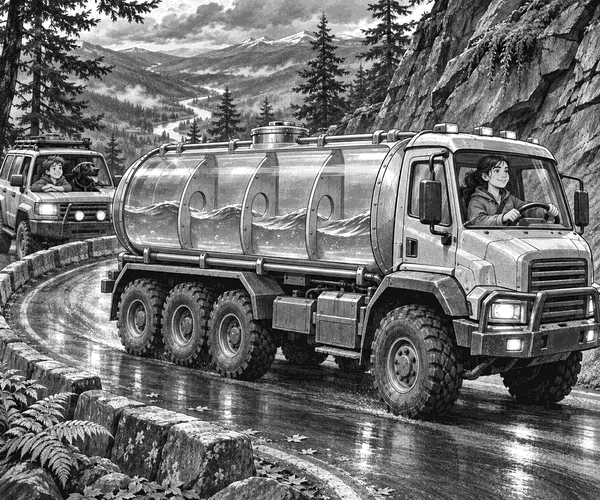

Rain had broken the pipe to Raven Hill Station.
The people there needed clean drinking water.
Driver Mia filled her six-wheel tanker.
Tom and Scout waited in the escort 4x4.
The tanker looked ready.
But its cargo would not sit still.
It could roll.
It could rush.
It could slosh.
Mia moved away gently.
Rumble. Swish. Rumble.
At the first junction, she braked early.
The truck slowed.
Then the water pushed forwards inside the tank.
Tom saw a small extra nod from the truck.
“The water kept moving!” he said.
Mia stopped in a safe lay-by.
She showed Tom a drawing of the tank.
Inside were strong metal plates called baffles.
Each plate had holes in it.
Tanker fact: Liquid surge is the movement of liquid inside a tank. Baffles split one large moving wave into smaller waves and reduce the push from front to back.
“Do the baffles stop every wave?” asked Tom.
“No,” said Mia. “The driver must still be smooth.”
A mechanic checked the lid.
She checked the valves.
She found no leaks.
The convoy began the climb.
Clouds curled around the pine trees.
The wet road shone beneath the tyres.
Then Tom saw Raven Bend.
It curled around the mountain like a hook.
Mia slowed before the turn.
She selected a low gear.
She kept both hands steady.
The tanker entered the bend slowly.
The water leaned towards the outside.
Small waves moved between the baffles.
Swish. Settle. Swish.
Tom watched from the escort truck.
Scout’s ears lifted at every swish.
Mia did not brake sharply.
She did not turn sharply.
She held a smooth line around the bend.
Driving fact: A tanker driver plans early, brakes gently and takes bends slowly. Baffles help, but careful driving controls the moving load.
The road straightened.
The water settled.
The tanker climbed the final hill.
People at the station waved.
Mia parked on the level unloading area.
Workers connected a clean hose.
Fresh water flowed into the station tank.
Tom patted Scout.
“The truck carried the water,” he said.
“And the hidden walls helped carry the waves.”
Scout gave one pleased woof.
The sloshing tanker had conquered Raven Bend.